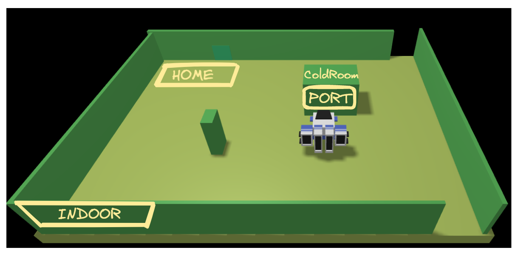
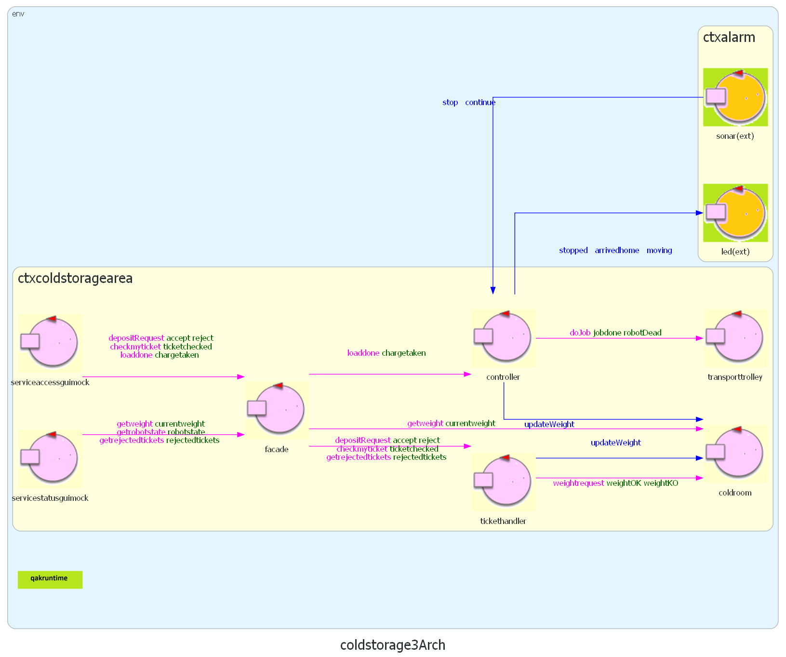

Sprint 3
Goal Sprint 3
ServiceStatusGui e grafiche migliorate.
Nel terzo sprint ci occuperemo della ServiceStatusGUI e delle interfacce grafiche finali.
Modello dello sprint precedente.

Requisiti

Requisiti
Analisi dei Requisiti
Domande al committente:
Per la posizione quanto dobbiamo essere precisi? Serve sapere la posizione corrente ad ogni step? per il cliente non è necessario quest'ultimo punto dipende da noi. --> per semplicità forniamo le coordinate ad ogni cambiamento del macrostato (in home, fase di load, fase di unload, posizione in caso di errore)
Analisi del Problema
Cosa implica lo stato del servizio?
Lo stato del servizio comprende:
- Lo stato e la posizione del TransportTrolley.
- Lo stato della ColdRoom (peso corrente su totale).
- Il numero di richieste negate dall'inizio del servizio.
Numero di richieste negate
Aggiorniamo il ticket handler per tener traccia delle richieste negate
QActor tickethandler context ctxcoldstoragearea {
[# var Rejected = 0 #]
...
State reject {
[# Rejected++ #]
...
}
Rendo tutti i componenti observable
Stato del TransportTrolley (sfruttiamo RobotPos):
updateResource [# planner.robotOnMap() #]
ColdRoom:
updateResource[# "" + PesoEffettivo + "_" + PesoPromesso + ""#]
TicketHandler:
updateResource [# "" + Rejected #]
Caricare i dati iniziali nella GUI
All'avvio della ServiceStatusGui per visualizzare i valori possiamo:
- Aspettare che i componenti aggiornino i propri valori normalmente
- Richiedere esplicitamente il valore corrente
Decidiamo di fare richiesta esplicita poiché in mancanza di richieste da parte degli utenti potrei dover aspettare un tempo indefinito prima di vedere lo stato del sistema.
Come mandare le richieste
Sfruttiamo la facade già creata in precedenza per richiedere al sistema i valori iniziali per la ServiceStatusGui.
Architettura logica dopo l'analisi del problema
Possiamo definire la gui come un attore (mock GUI) che poi verrà sostituito

Test Plan
- A seguito di una richiesta rifiutata devono aumentare le richieste rifiutate.
- Nel caso di loadDone fallita la posizione stampata deve essere diversa da home.
- All'avvio della Gui devono essere caricati i parametri attuali del sistema.
Progettazione
Facade aggiornato
QActor facade context ctxcoldstoragearea {
[#
var Ticket = ""
var PesoEff = 0
var PesoProm = 0
var Valid = true
#]
State s0 initial{
delegate "getrejectedtickets" to tickethandler
delegate "getrobotstate" to robotpos
delegate "getweight" to coldroom
println("ColdStorageFacade - in attesa") color blue
printCurrentMessage
} Goto work
State work {
}Transition t0 whenRequest depositRequestF-> depositreqhandler
whenRequest loaddoneF -> loadcontroller
whenRequest checkmyticketF -> checktickethandler
whenRequest getweightF -> getweightcoldroom
...
}
La classe per la parte web
Il server spring della ServiceStatusGUI è composto da un ControllerStatusGui.java e una serie di observer per i parametri da monitorare:
Socket Handler: WebSocketHandler.java
Ticket Handler si aggiorna per contare quanti ticket vengono rifiutati
QActor tickethandler context ctxcoldstoragearea {
[#
...
var Rejected = 0
#]
State s0 initial{
...
updateResource [# "" + Rejected #]
} Goto work
...
State reject {
[# Rejected++ #]
updateResource [# "" + Rejected #]
replyTo depositRequest with reject : reject( reject )
} Goto work
...
State sendrejectedticketnumber{
onMsg(getrejectedtickets : getrejectedtickets(NO_PARAM)){
replyTo getrejectedtickets with rejectedtickets : rejectedtickets($Rejected)
}
}Goto work
}
HTML page
Deployment
Deployment on RaspberryPi 3B/3B+
Led
- braccino corto: pin fisico 39 (GND)
- braccino lungo: pin fisico 40 (GPIO21)
Sonar
- VCC : pin fisico 4 (+5v)
- GND : pin fisico 6 (GND)
- TRIG: pin fisico 11 (GPIO 17)
- ECHO: pin fisico 13 (GPIO 27)
- Genera eseguibile con il Plugin Distribution di gradle (create Zip)
- Deploy della cartella generata sul rasp con python script
- Avvia main alarm (projectDir/bin/projectName) (il .bat è per windows)
Main system deployment
- Avviare il container itunibovirtualrobot23 su docker
Viene lanciato l'ambiente virtuale con il robot all'indirizzo http://localhost:8090/ - In intellij avviare il file MainCtxbasicrobot.kt del progetto BasicRobot
- In intellij avviare il file MainCtxcoldstoragearea.kt del progetto ColdStorage
- In intellij avviare il file MainCtxalarm.kt del progetto Alarm
- In intellij avviare il file ServiceaccessguiApplication.java del progetto serviceaccessgui. Aprire il client all'indirizzo http://localhost:8085/
- In intellij avviare il file ServiceaccessguiApplication.java del progetto statusgui. Aprire il client all'indirizzo http://localhost:8075/
| Lisa Innocenti Uccini | Luca Lombardi | Giacomo Romanini |
|---|---|---|
 |
||
| github: LisaIU00 | github: Lombax99 | github: RedDuality |